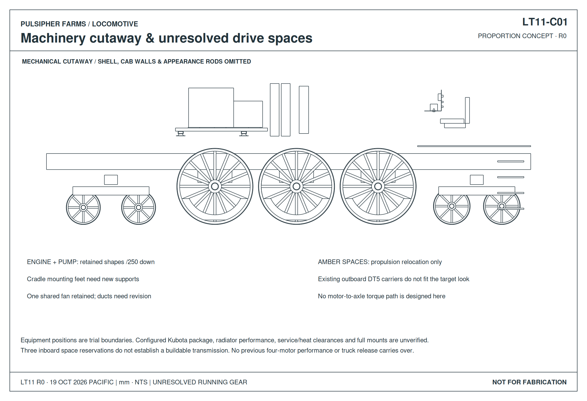
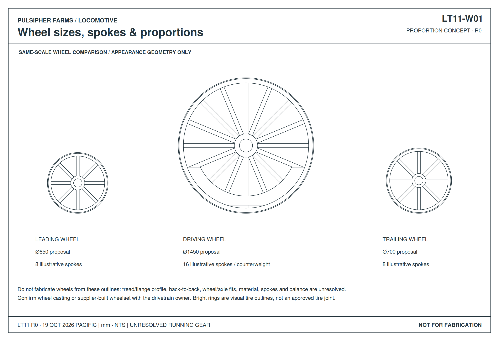
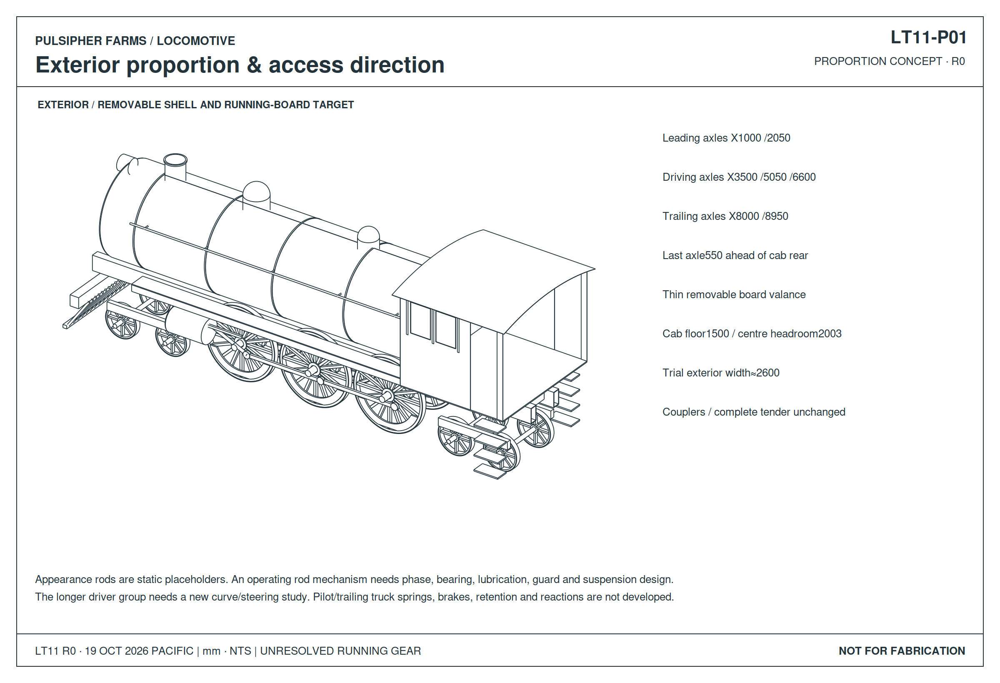

This retained design record predates LT16. Open the current whole locomotive and curve views · Current suspension drawings.
LT13 CURVE CHECK · 50/30 m curve placements reveal guide, body and frame clashes. Open the drawings and highlighted CAD. Neither radius is approved.
LT12 DRIVE UPDATE · Open the inboard motor/reduction arrangement and exploded drive CAD. The appearance and unresolved rod mechanism shown below remain the exterior reference.
LOCOMOTIVE / LT11
Northern Railroad profile
Lower stance · Three large spoked drivers per side · Small leading and trailing wheels
Exterior & mechanical layout
CAD projections · Proposed dimensions in mm



36-inch working gauge. Trial wheels: 1,450 mm drivers, 650 mm leading, 700 mm trailing. These are proportion proposals, not Western Train factory dimensions.
Exterior beside the mechanical cutaway
Loading…Select a component for its design status. Amber volumes mark unresolved drive/pivot spaces. Rods show appearance at one fixed position; the operating mechanism is not designed.